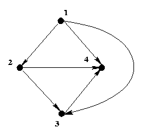

Relation
Digraph Representation of Binary Relation
Subjects to be Learned
-
representation of binary relation with digraph
Contents
A binary relation on a set can be represented by a digraph.
Let R be a binary relation on a set A,
that is R is a subset of A
A.
Then a digraph representing R can be constructed as follows:
Let the elements of A be the vertices of the digraph
G, and let <x, y> be an arc of G
from vertex x to vertex y if and only if
<x, y> is in R.
Example: The less than relation R on the set of integers
A = {1, 2, 3, 4}
is the set {<1, 2> , <1, 3>,
<1, 4>, <2, 3> , <2, 4> ,
<3, 4> }
and it
can be represented by the following digraph.

Next -- Properties of Binary Relation
Back to Schedule
Back to Table of Contents